| 时间 | 分类 | 标题 | 副标题 | 正文 | 图片 |
|---|---|---|---|---|---|
| 2021-11-08 19:29:00 | Business | Ye’s Yeezy to Pay $950,000 to Settle Lawsuit Over Late Shipments | California civil lawsuit alleged brand repeatedly failed to ship orders within 30 days; company didn’t admit wrongdoing | ||
| 2021-11-08 18:55:00 | Opinion | A Toxic Drug-Price Deal | The latest version of government price controls is barely better than the first. | So much for self-reflection after a political drubbing. Democrats are responding to last week’s defeat by rushing President Biden’s spending framework through the House while rewriting it on the fly—and they’ll worry about the consequences later. Consider the latest compromise to reduce drug prices, which will do the opposite. Progressives hope that passing legislation in the name of lower prices will increase senior support for their spending bill. But some House Democrats balked at earlier legislation that imposed draconian price controls that would have killed the incentive for drug innovation. Enter Chuck Schumer and Nancy Pelosi, who pieced together an agreement between their party’s warring factions. It should come with a black-box warning. |
|
| 2021-11-08 18:55:00 | Opinion | America’s Missing Ambassadors | The Senate should move fast on Biden’s capable envoys to Japan and China. | How’s this for a self-imposed foreign-policy setback: America’s most important ally in the most important theater of world politics has been without a Senate-confirmed U.S. ambassador for more than two years. The Foreign Relations Committee finally approved former Chicago Mayor Rahm Emanuel’s nomination to be U.S. ambassador to Japan last week, but he awaits a vote on the floor. The last American ambassador to Japan, Bill Hagerty, was confirmed in July 2017, and the Trump Administration strengthened ties with Tokyo as competition with China intensified. Mr. Hagerty left the post in summer 2019 to run for U.S. Senate in Tennessee, and President Trump’s 2020 nominee to replace him didn’t get a Senate vote before the November election. |
|
| 2021-11-08 18:54:00 | Opinion | A Media Censor for the FCC? | Nominee Gigi Sohn wants more government control of the airwaves. | Negotiations over the $4 trillion spending bill are consuming Washington, but President Biden’s effort to supercharge the regulatory state is also steadily advancing. The latest example is his nomination of progressive partisan Gigi Sohn to the Federal Communications Commission. The White House last month hailed Ms. Sohn as “one of the nation’s leading public advocates for open, affordable, and democratic communications networks.” Translation: She favors deploying the agency’s regulatory power to shackle broadband providers and silence conservative voices. |
 |
| 2021-11-08 18:53:00 | Opinion | The Woke Police Hit McDonald’s | The fast-food chain’s CEO is pummeled for a politically incorrect text. | Democratic pundits have been full of warnings since last Tuesday that the party should drop its woke cancel culture, but that message apparently hasn’t made it to Chicago. That’s where Chris Kempczinski, the CEO of McDonald’s , has been pounded into making an apology for a text he sent to Mayor Lori Lightfoot about shootings in the murder-wracked city. Mr. Kempczinski sent the text in April, shortly after the mayor visited McDonald’s headquarters after 7-year-old Jaslyn Adams was killed in her father’s car outside a McDonald’s restaurant. Thirteen-year-old Adam Toledo was fatally shot by police a month earlier. |
|
| 2021-11-08 18:40:00 | Business | AMC Reports Narrower Loss as Moviegoers Return to Theaters | CEO says company still isn’t where it needs to be: ‘We need to sell more tickets in future quarters’ | 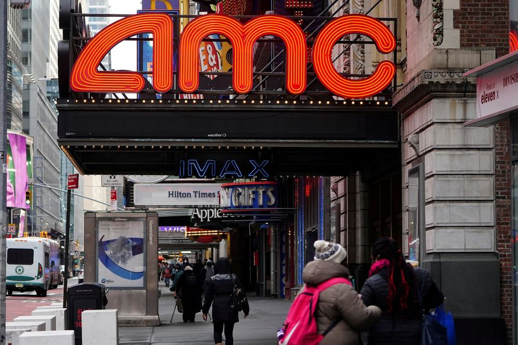 | |
| 2021-11-08 18:36:00 | Opinion | The Trump Republicans’ Lessons for Democrats | Both parties often mistake voter frustration with the other team for devotion to their own cause. | Hungry true believers tend to energize political parties, but their habit of putting purity above pragmatism leads to impatience with moderate colleagues. Eventually the young purists cannibalize the majorities they need to govern. As defeat looms, they announce dramatically that it’s their “last chance” to pass historic legislation. They argue that real conservatives or real progressives would accept nothing less. Republicans have been where the Democrats are headed—with absolute power comes absolute overreach. In 2016, Republicans ran the table, winning control of the presidency, House and Senate. While they had control of Washington, many Republicans refused to accept victories they didn’t consider “conservative enough.” But total control of the federal government apparatus is rare. Republicans should have found a way to compromise on the speed and size, not the direction, of their reforms. Persistence and ideological consistency would have been rewarded over time with big, enduring changes moving the nation in a more conservative direction. Instead, Republicans bickered among themselves and went for big victories that either failed completely or provoked electoral backlashes. |
|
| 2021-11-08 18:35:00 | Opinion | Don’t Let the Infrastructure Bill Become a Boondoggle | Strong leadership will be essential to ensure the projects are completed on time and on budget. | The newly passed infrastructure bill is a rare feat of bipartisan cooperation that President Biden and Congress should celebrate. From roads to waterways to power lines and more, the plan is poised to rebuild a nation in need of huge repairs. Once Mr. Biden signs the bill into law, the true work of fixing our infrastructure will begin. But there is a danger. The bill could easily lead to out-of-control costs, blown deadlines, and both real and metaphorical bridges to nowhere. The Biden administration needs to coordinate efforts among federal, state and local agencies to deliver on the promise of this bill. |
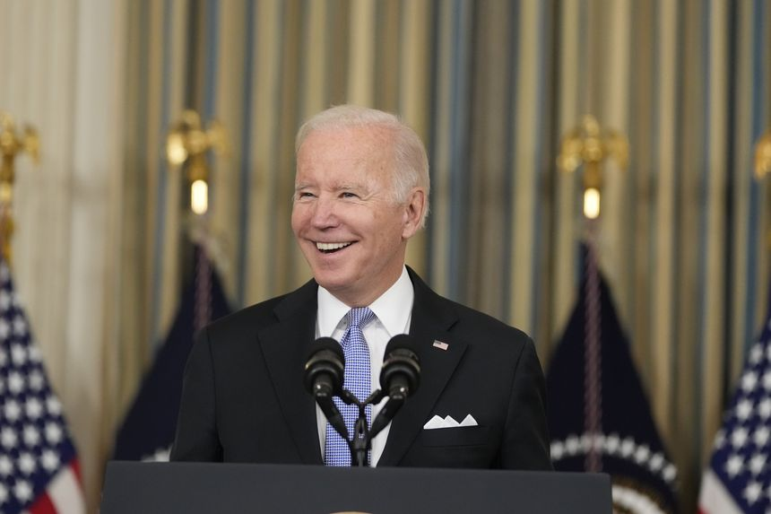 |
| 2021-11-08 18:32:00 | Opinion | Xi Jinping Battens Down the Hatches | He understands the dangers confronting China better than his propagandists do. | “A man of determination and action,” gushed China’s official news outlet Xinhua in a courageously fawning 12,000-word profile. “A man of profound thoughts and feelings,” the news agency continued, “a man who inherited a legacy but dares to innovate, and a man who has forward-looking vision and is committed to working tirelessly.” This extraordinary figure, few readers will be surprised to learn, is Xi Jinping, the paramount ruler of China, who is now consolidating his power across the Communist Party and the Chinese state. Though preoccupied with the cares of office, Mr. Xi still has time for the little people, the Xinhua profile marveled. Mr. Xi “used his own money to help finance the medical treatment of a villager from Liangjiahe.” This paragon of leadership even inspects “pigsties and toilets to obtain first-hand information of people’s livelihood.” On the evidence of this unsigned article, President Xi can check “achieve total control over Xinhua” off his to-do list. If China’s leaders are as wise as its propagandists are servile, the Middle Kingdom’s future is secure. |
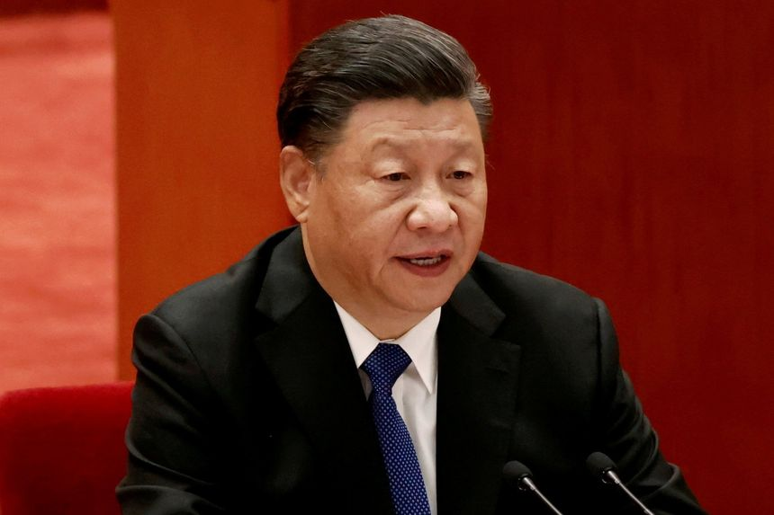 |
| 2021-11-08 18:31:00 | Opinion | Virginia’s ‘Phony’ Culture War | It’s getting ridiculous when Winsome Sears is called a face of white supremacy. | In the afterglow of the stunning Republican victories in Virginia—for governor, for lieutenant governor, for attorney general—the losers and their cheerleaders in the press have settled on an explanation: Glenn Youngkin waged a culture war. Politico led off the day after the election, with a headline declaring “One Lesson of Virginia? The Culture War Still Works.” On MSNBC Joy Reid claimed that “education” as an issue is “code for ‘white parents don’t like the idea of teaching about race.’ ” Barack Obama planted the seed while stumping for Terry McAuliffe in Richmond, when he accused opponents of campaigning on “phony trumped-up culture wars.” |
|
| 2021-11-08 18:30:00 | Books & Arts | ‘You Bet Your Life’ Review: The Dangers of Finding a Cure | New medical procedures, new drugs, new vaccines—as welcome as they are—inevitably involve risk, especially in the early stages. | In the fall of 1937, Joan Marlar, a 6-year-old girl in Tulsa, Okla., was diagnosed with strep throat and given an elixir containing a wondrous new medicine, sulfanilamide—an antibiotic hailed by Time magazine not long before as “the medical discovery of the decade.” Over the next week, Joan was racked with nausea; she became weak and tired. Her kidneys shut down, and she lapsed into a coma. Nine days after her diagnosis, she was dead. The culprit: the medicine she had been given to cure her. The liquid used to dissolve the antibiotic, it turned out, had poisoned her kidneys. The manufacturer had never tested the product for safety—and at the time wasn’t legally obliged to do so. Prodded by this disaster, Congress passed a law in 1938 mandating the safety testing that might have saved Joan and the 104 other Americans who died from the toxic remedy. |
|
| 2021-11-08 18:29:00 | Opinion | Who Bombed Iraq’s Mustafa al-Kadhimi? | Much depends on how the prime minister responds to the Iran-backed Shiite militia groups that tried to kill him. | The attempted assassination of Iraqi Prime Minister Mustafa al-Kadhimi at his Baghdad home Sunday represents a grave escalation in that strife-torn country. The political authorities’ response may determine whether Iraq has a chance to emerge from endless crisis or is set on a path of Lebanonization—de facto rule by armed militias in the service of a foreign state. No group has claimed responsibility for the three drones launched at Mr. Kadhimi’s residence in the Green Zone, the area where government offices are located in Baghdad. But the affiliation of the perpetrators is not in doubt. Only Iran-supported Shiite militias have the means, motivation and ability to mount an armed drone attack of this type. |
|
| 2021-11-08 18:24:00 | CFO Journal | Ford Motor Offers $2.5 Billion Green Bond to Investors | The move comes days after the auto maker said it would buy back higher-priced debt | ||
| 2021-11-08 18:10:00 | U.S. | Probe of Travis Scott Astroworld Concert Disaster Explores Role of Illegal Drugs | Investigators examine possibility of drug overdoses at the Houston concert involving counterfeit pills laced with fentanyl | Investigators probing the tragedy at the Travis Scott concert are looking at whether a bad batch of illegal drugs played a role in some deaths and numerous casualties, people familiar with the investigation said. Police are looking at the possibility of overdoses at Friday’s concert that were caused by counterfeit pills possibly laced with fentanyl, according to one of the people. Numerous concertgoers who survived were administered naloxone, which rapidly reverses opioid overdoses, the person said. |
|
| 2021-11-08 18:09:00 | Tech | Roblox Shares Skyrocket on Better-Than-Expected Earnings | Online entertainment company saw a slight decline in users last month after its platform suffered a roughly 70-hour outage | Shares in Roblox Corp. surged after the online entertainment company reported third-quarter earnings and disclosed metrics for the current quarter, during which it experienced a significant outage. Roblox on Monday said revenue more than doubled to $509.3 million and bookings, which includes deferred revenue, rose 28% to $637.8 million for the quarter ended in September. Analysts polled by FactSet were expecting bookings of $636.5 million. Roblox widened its loss to $74 million, up from $48.6 million a year earlier, due to increased spending on efforts to grow its business during the quarter. Analysts had been expecting a loss of $86.2 million. |
|
| 2021-11-08 17:56:00 | Books & Arts | Travis Scott Tragedy Puts Live Nation’s Music-Festival Bet to the Test | Outdoor events have helped lead a live-music rebound this year; the concert promoter has been named in several lawsuits | Live Nation Entertainment Inc. relied heavily on outdoor events to build back its business this year. The incident at a Travis Scott festival over the weekend is providing a test of that strategy. Live Nation is the world’s largest concert promotion company and is the owner of the Astroworld festival’s promoter. On Monday, its shares fell 5.4% in the first day of trading after the festival was cut short due to a crowd surge, eight deaths and multiple injuries. |
|
| 2021-11-08 17:45:00 | Politics | Supreme Court Hears FBI Claim of State Secrets in Muslim Surveillance Case | FBI sent a bodybuilder into mosque to look for would-be terrorists; they turned him in to the FBI | WASHINGTON—The Supreme Court appeared divided at arguments on Monday over whether Muslim Americans who allege the FBI targeted them in 2006 because of their religion can proceed with a lawsuit that the government argues must be dismissed to protect state secrets. The investigation itself, where the government sent a bodybuilder to infiltrate an Irvine, Calif., mosque in search of potential terrorists, isn’t a secret. Code-named Operation Flex, the investigation was disclosed in litigation years ago and became the subject of a 2012 public-radio documentary. |
|
| 2021-11-08 17:13:00 | Opinion | The Obama Lesson Democrats Try to Forget | Midterm voters will not reward lawmakers for enacting costly priorities of the left. | Two influential figures who have spent decades in Democratic politics have taken to the pages of the New York Times to try to warn fellow liberals to avoid a 2022 election disaster. If the warning is ignored, don’t blame the authors. “Bill Clinton Saved His Presidency. Here’s How Biden Can, Too,” is the headline on an op-ed from former Clinton pollster Mark Penn and former New York City Council President Andrew Stein. They write: |
|
| 2021-11-08 16:54:00 | Markets | Robinhood Hack Exposes Millions of Customer Names, Email Addresses | Trading app says the incident took place last week and that the breach has since been contained | Robinhood Markets Inc. said Monday that an intruder gained access to its systems last week and made off with the personal information of millions of its users. The trading app said in a blog post that the incident took place on Wednesday evening and that the breach has since been contained. |
|
| 2021-11-08 16:36:00 | Business | New York State Gambling Regulators Approve Nine Mobile Sports Betting Operators | FanDuel, DraftKings and BetMGM are among those licensed to operate in the new market | ||
| 2021-11-08 16:36:00 | Books & Arts | ‘Valentine’ by Snail Mail Review: The Beauty and Pain of Private Moments | Lindsey Jordan’s second record is a powerful look at love, intimacy and vulnerability. | ||
| 2021-11-08 16:35:00 | Markets | Fed’s Randal Quarles to Resign at End of Year | The Federal Reserve governor’s term as vice chairman for bank supervision expired last month | Federal Reserve governor Randal Quarles said Monday he would resign his position around the end of this year, giving President Biden as many as four seats to fill on the central bank’s seven-member board in the coming months as he weighs how to fill the top job of Fed chairman. Mr. Quarles was appointed to a four-year term in October 2017 by then-President Trump as the Fed’s vice chairman for bank supervision, a position created by the 2010 Dodd-Frank financial-regulatory overhaul. The resignation this year was largely expected because Mr. Quarles’s term as vice chairman had lapsed last month and because his term leading a separate international regulatory body, the Financial Stability Board, expires next month. |
|
| 2021-11-08 16:26:00 | Politics | SEC Names New Board Members to Audit Watchdog | Incoming chair Erica Y. Williams will be PCAOB’s first Black leader | WASHINGTON—The Securities and Exchange Commission moved to complete its overhaul of the federal audit watchdog Monday, naming four new members to the Public Company Accounting Oversight Board. The SEC appointed Erica Y. Williams, an attorney with Kirkland & Ellis LLP, to serve as the PCAOB’s chair. It also tapped Christina Ho, Kara Stein and Anthony C. Thompson to serve as members of the board, which the SEC oversees. |
|
| 2021-11-08 16:18:00 | Politics | Jan. 6 Committee Subpoenas Bill Stepien, Michael Flynn and Other Trump Allies | House panel is investigating riot by Trump supporters at the Capitol | WASHINGTON—The House Select committee investigating the Jan. 6 assault on the U.S. Capitol said it has subpoenaed six close allies and campaign officials of former President Donald Trump who allegedly helped him promote false claims that the election was stolen from him. Those targeted by the subpoenas include Bill Stepien, manager of the Trump 2020 re-election campaign; Jason Miller, a senior adviser to the campaign; and Angela McCallum, the campaign’s national executive assistant. |
|
| 2021-11-08 16:08:00 | World | U.S. and Europe Crack Down on REvil Ransomware Group | The Justice Department said it had clawed back $6.1 million in ransomware payments and seeks extradition of Ukrainian arrested in Poland | Law enforcement in the U.S. and Europe announced a series of actions aimed at a Russia-linked criminal group behind ransomware attacks that crippled critical infrastructure and businesses, aiming to strike a blow at a scourge the Biden administration has identified as a prime national-security threat. In Washington, the Justice Department announced the recent arrest in Poland of a Ukrainian national behind the REvil ransomware attack on Kaseya Ltd., a technology provider, and the indictment of another individual. |
|
| 2021-11-08 16:07:00 | Economy | Fed Says U.S. Public Health Among Biggest Near-Term Risks to Financial System | Semiannual Financial Stability Report also notes asset prices are susceptible to large declines should investor sentiment shift | WASHINGTON—The potential for U.S. public health to worsen as the Covid-19 pandemic continues is one of the greatest near-term risks to the financial system, the Federal Reserve said, while noting that asset prices are susceptible to large declines should investor sentiment shift. Any deterioration in the public-health situation could slow the recent economic recovery, particularly if widespread business closures returned and supply chains were further disrupted, the Fed said. The number of new Covid-19 cases has fallen in recent months, but a resurgence this summer, tied to the Delta variant, coincided with a slowdown in hiring and economic growth. |
|
| 2021-11-08 15:36:00 | World | China Has Built Mock-Ups of U.S. Aircraft Carrier, Warships in the Desert | Satellite images indicate realistic military training as tensions over Taiwan rise | ||
| 2021-11-08 15:21:00 | World | Germany Hits Record Covid-19 Tally as Pandemic Rebounds Across Europe | Country’s recent success in fending off the virus left many people without natural immunity, a possible factor behind the current surge | ||
| 2021-11-08 15:15:00 | Markets | Why Is Tesla Stock Down Today? | CEO Elon Musk considers the sale of a 10% stake in the electric-vehicle maker | Tesla Inc. shares were down 3% at midafternoon Monday after the electric-vehicle maker’s chief executive and largest shareholder, Elon Musk, indicated he might sell 10% of his holdings following a weekend poll on Twitter . Here is a look at what is going on. Mr. Musk asked Twitter users on Saturday whether he should sell 10% of his Tesla stock to pay taxes. Mr. Musk, a billionaire, prefaced the question by saying that “much is made lately of unrealized gains being a means of tax avoidance.” |
|
| 2021-11-08 14:31:00 | Tech | Facebook Documents Accelerate EU Push to Regulate Social Media | EU officials say former employee’s disclosures show need for tighter digital rules | European officials are seizing on disclosures from Facebook whistleblower Frances Haugen to accelerate and sharpen their plans to impose sweeping new restrictions on big technology companies. After a series of meetings with Ms. Haugen, policy makers and lawmakers for the European Union said that the bloc must move quickly to toughen and enact measures in a bill proposed last year that would impose stiffer obligations on social-media services. The bill, as currently drafted, would require large tech platforms to actively look for and mitigate risks from content that is illegal, or face hefty fines. |
|
| 2021-11-08 14:14:00 | Books & Arts | ‘Life’s Work: A Retrospective’ by Doc Watson Review: More Than Just a Brilliant Picker | A 101-track, career-spanning, cross-label compendium reveals the guitarist’s incredible breadth of talent. | ||
| 2021-11-08 14:00:00 | Life & Work | A Procrastinator’s Guide to Christmas Vacations | For a last-minute getaway, try one of these five festive and less predictable locales | CURVEBALLS, from the Delta variant to supply chain snafus, may be threatening the holidays. If procrastination or the many disruptions of 2021 mean you’re only now planning a seasonal getaway, consider these five wonderful-in-winter destinations where bookings are still available and room rates won’t break the bank. Intrepid travelers with a thirst for Italy should consider Conegliano-Valdobbiadene, an appellation at the heart of Italy’s Prosecco production, in the province of Treviso. A onetime retreat for Venetian nobility, the area, aka the “Prosecco Hills,” comprises a mosaic of vineyards, rural villages, old churches and castles, and is one of Italy’s most recently designated Unesco World Heritage sites. It’s also strategically positioned: Venice is just an hour’s drive south, while to the north lie the scenic Veneto Dolomites and Parco Nazionale delle Dolomiti Bellunesi—about an hour by car. The stylish ski resort of Cortina d’Ampezzo is about a 90-minute drive from Conegliano. Source your own holiday fizz by visiting local wineries, like Villa Sandi, that open during the holidays (other than on Dec. 24 and Dec. 31). Bunk down at the Villa Abbazia, a Relais & Châteaux hotel housed in an 18th-century mansion and garden complex in the town of Follina. December rates from about $240 a night |
|
| 2021-11-08 13:34:00 | Opinion | What Parents Saw and Voters Want in Virginia | It was the video of remote learning that stimulated parents to object to school abuses. | Regarding “Lessons of the Progressive Fall” (Review & Outlook, Nov. 4): Glenn Youngkin’s victory in Virginia should be attributed in large part to the presence of video cameras in the classrooms. It was the video of remote learning that stimulated parents to object to school abuses. For many years our schools have worked to keep parents out of the classroom. Seventy years ago it was accepted practice for parents to come into a classroom to observe. Using the mantra of security, it is now virtually impossible for a parent to see what is being taught in the schools. This must change. School boards grew out of the culture of the one-room schoolhouse. Local citizens erected a school, hired a teacher and then supervised the school. The teacher was brought in as an employee. A return to traditional school-board management is a must. |
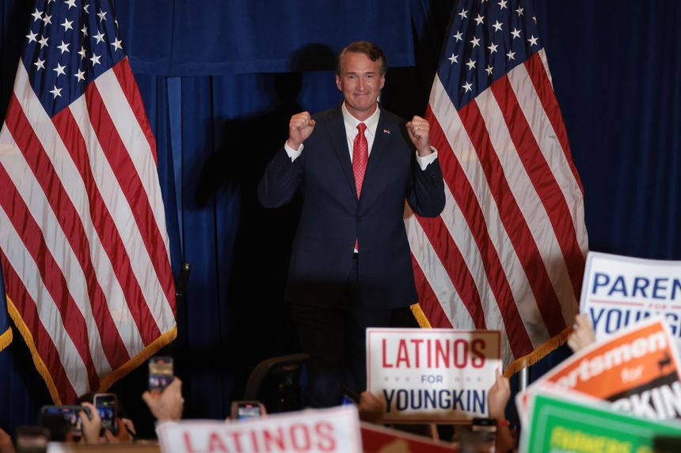 |
| 2021-11-08 13:34:00 | Opinion | Think Twice Before Drilling in Yellowstone | Even if the plan to harness geothermal energy were feasible, it could trigger an eruption. | I disagree with Prof. Jacob Borden that “Drilling in Yellowstone Could Save America,” (op-ed, Oct. 29). Yellowstone’s geysers and hot springs result from relatively shallow magma. Energy extraction from similar deposits has failed repeatedly because rock-fracture leakage cools the local region. Both the Los Alamos Hot Dry Rock geothermal energy program and a similar British project in Cornwall were terminated. An attempt to extract energy from the magma under Kilauea Iki within Hawaii Volcanoes National Park also failed. Drilling technologies have improved, but geothermal-energy recovery still depends on hydrology and net energy gain, not loss. Prof. Borden’s argument doesn’t hold water. James Bresee |
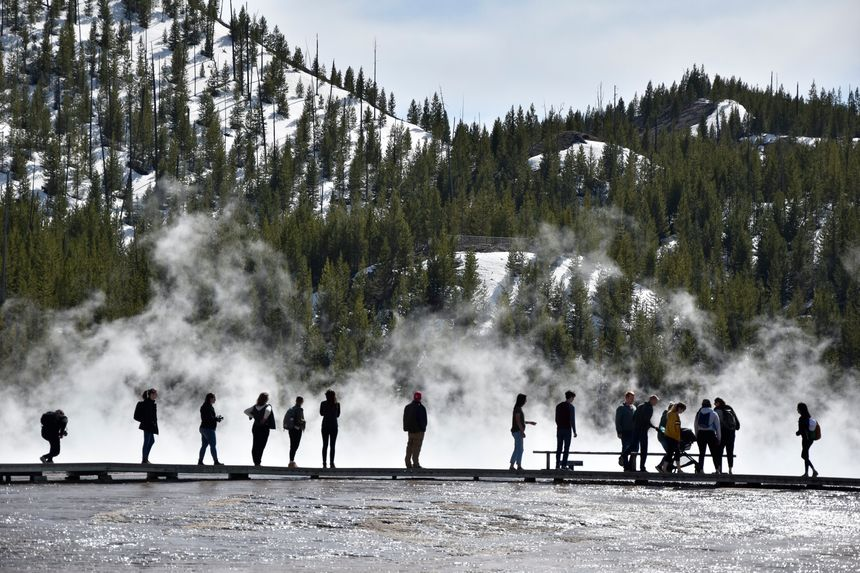 |
| 2021-11-08 13:33:00 | Opinion | Pennsylvania Governor Responds to Trump on the 2020 Election | Gov. Tom Wolf takes on the former president’s claims of fraud. | As governor of Pennsylvania, I am disappointed the Journal would publish former President Donald Trump’s irrational array of discredited lies about the November 2020 election in our commonwealth (Letters, Oct. 28.) Pennsylvania had a free, fair and secure election. Claims of voter fraud and rigged elections are completely false and have been repeatedly debunked by fact checkers and dismissed by dozens of state and federal judges as well as Trump administration officials, most notably former Attorney General Bill Barr. |
|
| 2021-11-08 13:06:00 | Life & Work | U.S. Lifting Border Restrictions: Here’s What Travelers Need to Know | Children under 18 are exempt from vaccination requirements, and unvaccinated travelers will face stricter testing protocols | International travelers began traveling to the U.S. Monday after the country reopened its borders, with most arrivals being required to show proof of vaccination and a negative Covid-19 test. Biden administration officials have released more information on pre-departure testing for both international and returning U.S. travelers, as well as exemptions for children under 18. |
|
| 2021-11-08 13:03:00 | Markets | Citigroup Has to Rip Off the Bandage | Leaving consumer banking in South Korea is proving harder than anticipated, but the move can still improve future returns | It won’t be cheap for Citigroup to get out of South Korean consumer banking. That doesn’t make it the wrong move. Earlier this year, as part of Chief Executive Jane Fraser’s strategic refresh in pursuit of higher returns, the bank said it would exit consumer-banking franchises in 13 markets across Asia, Europe and the Middle East. On Monday, Citigroup laid out costs for the bank to wind down, rather than sell, its South Korea consumer-banking unit. Due to costs related to reducing its workforce there, the bank on Monday said that it expects to incur cash costs of about $1.2 billion to $1.5 billion. |
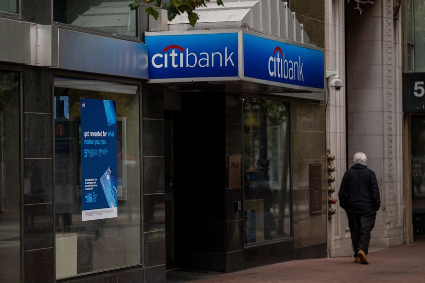 |
| 2021-11-08 12:53:00 | Markets | McAfee to Sell Itself to a Private-Equity-Led Group | Purchase price totals about $12 billion, excluding debt | McAfee Corp. said it would be acquired by an investor group for around $12 billion in cash, about a year after the security-software company went public. The deal, valued at $26 a share, is being led by Advent International Corp., Permira Advisers LLC, Crosspoint Capital Partners, Canada Pension Plan Investment Board, GIC Pte. Ltd. and a wholly owned subsidiary of the Abu Dhabi Investment Authority. |
|
| 2021-11-08 12:48:00 | Business | Aaron Rodgers’ State Farm TV Ads Cut Back After Vaccine Comments | NFL star says he is unvaccinated against Covid-19 and has questioned vaccine effectiveness | ||
| 2021-11-08 12:42:00 | Opinion | Should You Vaccinate Your 5-Year-Old? | Be reassured that whatever you do, the risk is extremely low. | If you’re agonizing about whether to have your young child vaccinated against Covid-19, be reassured: The risk is extremely low either way. The Centers for Disease Control and Prevention estimates that 42% of U.S. children 5 to 11 had Covid by June 2021, before the Delta wave—a prevalence that is likely greater than 50% today. Of 28 million children in that age range, 94 have died of Covid since the pandemic began (including deaths before newer treatments), and 562 have been hospitalized with Covid infections. Serious complications are so uncommon in this age range that of 2,186 children in the Pfizer vaccine study, no child in either the vaccine or placebo group developed severe illness from Covid. Sixteen of the 663 unvaccinated children developed Covid infections, compared with only three of the 1,305 vaccinated ones—an effectiveness rate of 90.7% against infection. Thus it’s safe to assume that vaccinating a healthy child would take his extremely low risk of serious disease and drive it down even lower. |
|
| 2021-11-08 12:23:00 | World | U.S. Opens Borders to Vaccinated Europeans, Others, After More Than 18 Months | Airlines see bookings rise sharply after ban, but capacity is still well below pre-Covid-19 level | ||
| 2021-11-08 12:01:00 | Life & Work | Don’t Be That Awkward Colleague: A Guide to Office Etiquette | As we head back to work, everything from face masks to greetings can be fraught | Well, this is awkward. We’re back at the office, yet our social skills seem to have stayed home. Or maybe it’s just that the rules and boundaries have changed. |
|
| 2021-11-08 12:00:00 | Business | How I Cut My Use of Fossil Fuels: Tips From the Pros | We asked people steeped in climate and renewable-energy issues how they reduced their personal carbon footprints | ||
| 2021-11-08 11:51:00 | Business | Infrastructure Projects to Boost Sales and Prices, Industry Executives Say | Legislation’s full impact won’t be felt for months or longer, executives say, as money is allocated and projects are planned | ||
| 2021-11-08 11:23:00 | Politics | While America Feuds at Home, Russia and China Are Busy Making Moves | A U.S. that is distracted and consumed by its own internal fights invites adventurism by adversaries | While Washington has been consumed with its own internal fussing and fighting in recent weeks, a few other things have been unfolding elsewhere around the globe: For the second time this year, Russia has massed thousands of troops and their armored equipment near its border with Ukraine, and again appears to be using its energy supplies as a weapon to stop any westward drift by Ukraine’s government. In response, the Biden administration dispatched William Burns, director of the Central Intelligence Agency and a former ambassador to Russia, to Moscow to let the Kremlin know the U.S. is watching. |
|
| 2021-11-08 11:00:00 | Real Estate | 8 Great Ideas for Your Thanksgiving Table Decor—From Stemware to Centerpieces | To bring cheer that’s not cheesy to your holiday table, we rounded up suggestions from scores of interior designers, experts on entertaining and homeware-shop founders | FOR GRANDMILLENNIALS, thrifters and other lovers of décor, half the fun of hosting a holiday dinner is setting the table. They happily hunt for mix-and-match plates and brainstorm tabletop themes all year round. For other people, the mere idea of a theme is off-putting and overwhelming. We asked a panel of experts to offer some Thanksgiving table do’s and don’ts, and they unanimously recommended restraint. “It’s a mistake to get fixated on the theme,” advised Wayne, Pa., designer Eddie Ross. He’s seen people get overzealous when it comes to turkey motifs, for example—incorporating them on everything from plates to napkins and even littering the spread with gobbler figurines. It can quickly go, he said “from making a pretty statement with, say, one turkey[-patterned] linen on a burlap tablecloth to a turkey tag sale.” Below, eight ideas to bring some merry but elevated design to your feast without going over the top. Don’t build a centerpiece so tall your guests have to part the greenery like a spy in the hedges just to talk across the table. Sara Hillery, a designer in Richmond, Va., recommends a low decoration that runs down the length of an extended table. This shallow garland of eucalyptus and dried citrus should keep the conversation welling. |
|
| 2021-11-08 10:46:00 | Markets | China Evergrande Scrapes Together More Cash From Tech Company Stake Sale | The troubled property giant sold a roughly 5.7% stake in HengTen Networks, raising $145 million | SINGAPORE— China Evergrande Group raised around $145 million in recent days by selling a chunk of its shares in a film production and internet-media company, scraping together more cash as additional bond-payment deadlines loom. The troubled property giant sold a roughly 5.7% stake in Hong Kong-listed HengTen Networks Group Ltd. over the last three trading days, according to regulatory filings. |
|
| 2021-11-08 10:31:00 | Business | Regeneron’s Antibody Drug Cut Risk of Covid-19 by 82%, Company Says | Data suggest potential use for drug as a prophylactic for the immunocompromised or others who aren’t well protected by vaccination | 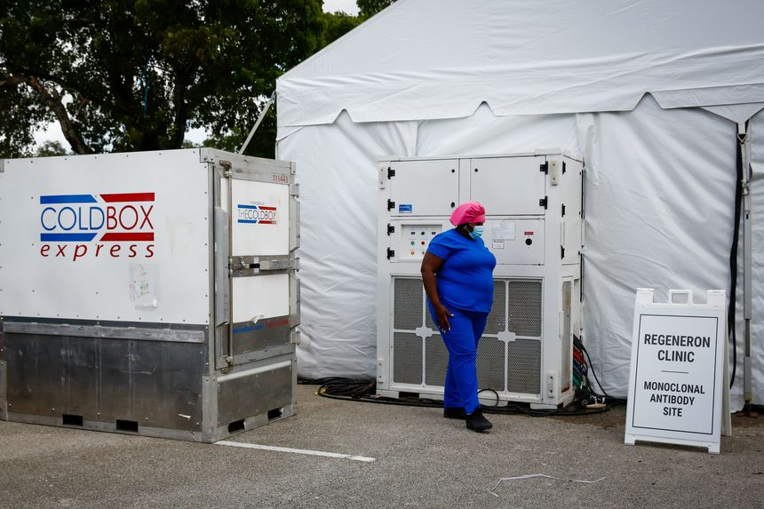 | |
| 2021-11-08 10:00:00 | Markets | Fidelity’s Retail Investor Accounts Top 30 Million | The asset manager has benefited from Americans’ renewed interest in the stock market | Fidelity Investments said clients’ assets jumped to $11.1 trillion in the third quarter, buoyed by the continuing surge of new accounts from individual investors. Assets under administration, or what customers held in brokerage and retirement accounts on Fidelity platforms as well the company’s own funds, rose 26% from the same period a year ago, the company said Monday. Fidelity’s assets under management climbed 22% to $4.2 trillion. |
|
| 2021-11-08 09:41:00 | Markets | Cartier Could Be an Easy Win for Activist Third Point | A sale of its weak online fashion retailer YNAP could boost the shares of luxury jewelry owner Richemont | Diamonds and technology don’t mix. This may be the only point that an activist investor need make to the owner of French jeweler Cartier. Shares in Geneva-based Compagnie Financière Richemont rose 4% in morning trading Monday following a weekend report in fashion journal Miss Tweed that Daniel Loeb’s Third Point hedge fund has built a stake. If confirmed, it would be the fund’s second notable European investment in as many weeks, after it recently called for a break up of Royal Dutch Shell with arguments the oil major rejected. |
 |
| 2021-11-08 09:21:00 | Business | Rogers Communications Withdraws Boardroom Court Challenge | Decision from cable-TV, wireless company comes after chairman Ed Rogers scored legal victory Friday | ||
| 2021-11-08 09:00:00 | Business | Deere Strike Sows Worry in Farm Country | Farmers, dealers fear delayed deliveries, higher prices as strike at tractor maker stretches beyond three weeks; ‘it’s a chain reaction’ | 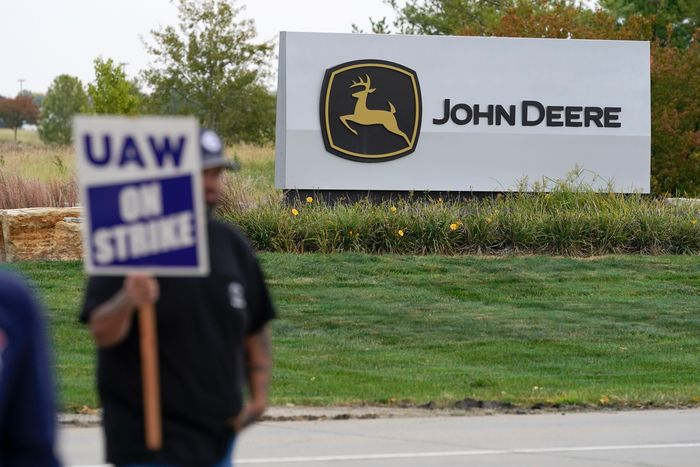 | |
| 2021-11-08 09:00:00 | Life & Work | New York’s Grand Central Oyster Bar Reopens with $40 Crab Cakes: ‘I’m Shocked, But I’m Happy.’ | The famed restaurant survived two global pandemics and now soaring seafood costs. A brief look at its vaunted history | For the Time Capsule series, we spotlight a cherished restaurant, hotel or landmark that’s changed remarkably little over the years. This week, we visit Grand Central Oyster Bar in New York. WHEN IT opened in 1913, as the main dining room for the city’s new Beaux-Arts transportation hub, what we know today as the Grand Central Oyster Bar was baldly dubbed the Grand Central Terminal Restaurant. Its name was the only prosaic thing about it. Persian carpets covered the floors, cane-backed chairs stood at tables draped in white linen, and a ceiling of vaulted canopies inlaid with sand-hued tiles glistened above electric chandeliers. The sprawling subterranean space dazzled diners arriving or leaving on the Wolverine, the 20th Century Limited and hundreds of other trains that chugged in and out of Grand Central every day. Over the decades the Persian rugs were tossed, the white linen gave way to red-and-white checks and diners sat elbow-to-elbow at counters that displaced many of the tables. Well into the 1960s, deals were sealed in the clubby (and quieter) adjoining Saloon, over lunches of dry martinis and silken oyster pan roasts. But by the early 70s, rail travel was in rapid decline, and the Oyster Bar along with it: The ceiling tiles were darkened from time and neglect, aqua contact paper covered the marble pillar bases, and plastic fish festooned fishing nets that hung from the ceiling. On the last day of July 1974, the Oyster Bar closed. Later that year, restaurateur Jerome Brody takes the helm and the restaurant reopens. |
|
| 2021-11-08 09:00:00 | Business | Where to Put Solar Panels? How About on the Water? | Floating solar panels are still a small part of the energy mix. But they have some advantages over land-based systems. |  |
|
| 2021-11-08 09:00:00 | Economy | Top Fed Official Says Continued High Inflation Would Be Problematic for Central Bank | Vice Chairman Richard Clarida expects price pressures to dissipate, but a ‘repeat performance’ in 2022 of recent inflation ‘would not be a policy success’ | A top Federal Reserve official said he expects this year’s surge in inflation to ease as supply and demand imbalances fade over time and that an extended run of higher prices through next year would be a problem for the central bank. Those imbalances should dissipate “without putting persistent upward pressure on price inflation and wage gains adjusted for productivity,” said Fed Vice Chairman Richard Clarida in remarks prepared for delivery on Monday morning. |
|
| 2021-11-08 08:30:00 | Business | Citigroup to Spend More Than $1 Billion to Close Its South Korea Consumer Business | Move is part of plan to exit consumer banking in 13 countries to simplify the bank and boost profits | ||
| 2021-11-08 08:21:00 | Markets | Tesla, Trade Desk, Peloton: What to Watch When the Stock Market Opens Today | Tesla skidded after Twitter users told Musk to sell 10% of his stake; Coinbase rose in tandem with bitcoin | U.S. stock futures wavered, pointing to a pause in the rally that pushed major indexes to record highs for the umpteenth time this year last week. Here’s what we’re watching before Monday’s trading session gets under way. Write to Joe Wallace at joe.wallace@wsj.com |
|
| 2021-11-08 08:00:00 | Markets | Wall Street Pushes Back as SEC Targets Business Practice That Generates Billions | Virtu and Robinhood are among firms that say payment for order flow allows for commission-free trading | Wall Street is fighting back as Securities and Exchange Commission Chairman Gary Gensler considers policy changes that threaten to upend a lucrative business model. Trading firms and brokers have ramped up their lobbying efforts and campaign donations to Republicans seeking to win control of Congress in next year’s midterm elections. They’ve become especially vocal about Mr. Gensler’s scrutiny of payment for order flow, whereby some brokerages sell their clients’ stock and option orders to high-speed trading firms that execute the trades. |
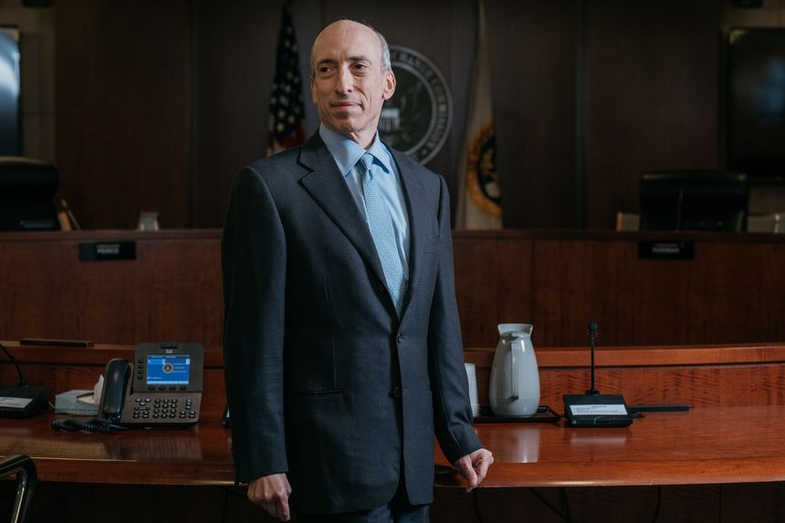 |
| 2021-11-08 08:00:00 | U.S. | Texas Jails Fill With Migrants as Border Arrests Overwhelm Courts | Of 1,500 trespassing arrests under Operation Lone Star, 3% have led to convictions, while hundreds wait weeks or months in jail | DEL RIO, Texas—Texas Gov. Greg Abbott’s effort to use state law enforcement to enforce immigration law by arresting migrants for trespassing is overwhelming local courts and resulting in few convictions. Just 3% of the about 1,500 people arrested on misdemeanor trespassing charges since July as part of what Mr. Abbott calls Operation Lone Star have been convicted, all via guilty pleas, according to court records. |
|
| 2021-11-08 08:00:00 | U.S. | Republicans Make Beachhead in Glasgow | Handful of GOP lawmakers at COP26 work to show skeptics that climate change isn’t a one-party issue | GLASGOW—Republicans have been such a rare sight at international climate conferences that a Utah congressman borrowed a line from a support group to introduce himself at the COP26 summit. “My name’s John Curtis. And I’m a Republican,” he said, drawing laughs from fellow lawmakers and others at a panel session over the weekend. “And I’m at COP. How cool is that, right?” |
|
| 2021-11-08 08:00:00 | Markets | Consumers Trade Rib-eye for Ground Beef as Grocery Prices Rise | Supermarkets say shoppers are seeking out lower-cost options in the meat case in response to higher prices | Americans are cutting back on steak as rising grocery prices squeeze spending. Supermarkets say shoppers are buying more store-brand meat products and trading down from beef to less-expensive alternatives such as chicken or pork, after prices for products such as rib-eye climbed about 40% from a year ago, according to research firm IRI. Some consumers are replacing boneless chicken breast with cheaper bone-in chicken, retailers said. |
|
| 2021-11-08 07:00:00 | World | China’s Economy Faces Risk of Yearslong Real-Estate Hangover | Booming market helped juice growth for more than a decade; without it, China could struggle to match previous pace, economists say | ||
| 2021-11-08 07:00:00 | Tech | Nextdoor to Complete Move to Go Public | Social-networking platform for local neighborhoods takes SPAC path to stock-market listing | Nextdoor Inc., the free social-networking app aimed at connecting local neighborhoods, is due to make its stock-market debut Monday, capitalizing on its widening appeal during the pandemic. The San Francisco-based company that was founded a decade ago made its name helping people scout locally for dog walkers or gripe about neighbors. During the height of the pandemic, with people stuck at home, users took to the platform to check on and stay connected with their neighbors. User numbers shot up to 58 million last year from 48 million in 2019. They grew to 63 million by mid-2021. |
|
| 2021-11-08 06:41:00 | Markets | Chinese Junk Bond Yields Top 25% as Property-Market Strains Intensify | Selloff in high-yield Chinese bonds shaves about a third of bondholders’ wealth in six months | HONG KONG—The biggest selloff that China’s international junk-bond market has ever seen has wiped out around a third of bondholders’ wealth in just six months. The steep and rapid decline shows how regulatory curbs on borrowing, extremely dislocated credit markets, and slowing home sales have combined to pressure more Chinese property developers, which account for most of China’s high-yield issuance. |
|
| 2021-11-08 06:33:00 | Markets | Elon Musk Insults Tesla Shareholders’ Intelligence | Musk has good reason to dump some Tesla shares and every right to do so without resorting to theatrics | The world’s richest man says he will abide by the will of the masses. Rather than flipping a coin or consulting a Magic 8-Ball, the fate of 10% of Elon Musk’s $210 billion stake in Tesla was decided this weekend by a nearly-as-random Twitter poll. How many of the 3.5 million people who “voted” are actually Tesla investors, and in what proportion, will never be known. We do know that mutual fund giant Vanguard Group wasn’t invited to click “yes” or “no” 198,000 times to reflect the size of its stake and in keeping with the word “equity.” |
|
| 2021-11-08 06:22:00 | Markets | SoftBank Feels the Chill Wind From China | A big buyback can’t hurt, but the stock’s fortunes now lie with forces mostly beyond management’s control | SoftBank ’s technology wagers haven’t been paying off lately, especially in China. The company is hoping that betting on its own stock can help rekindle the old magic. That could provide a short-term boost. But as long as SoftBank lacks the verve to move regulators, who are busy cracking down on tech sectors the company favors, it’s tough to see the stock’s fortunes really turning decisively for the better. |
|
| 2021-11-08 05:52:00 | World | Nicaragua’s President Ortega on Track for Controversial Fourth Term | Daniel Ortega’s triumph would deepen country’s isolation and risk increasing a migrant exodus to the U.S. | As expected, Nicaragua’s President Daniel Ortega had an overwhelming lead on his way to winning his fourth consecutive term, in an election that both the opposition and the U.S. said was a sham, completing his transformation into a 21st century version of the dynastic dictator he helped to overthrow over 40 years ago. In the early hours of Monday, Brenda Rocha, the head of Nicaragua’s electoral authority said that with 65% of the vote counted, Mr. Ortega had won 75% of the vote. Five small satellite parties controlled by Mr. Ortega and nicknamed “zancudo” or mosquito parties, split the difference. Ms. Rocha said abstention had been 35%. |
|
| 2021-11-08 05:52:00 | China | China to Issue Licenses for Education Companies to Resume After-School Tutoring | Companies will be required to operate after-school tutoring on a nonprofit basis while being allowed to make a profit on other businesses | SINGAPORE—China’s government plans to issue more than a dozen licenses that would allow companies to offer after-school tutoring, according to people familiar with the matter, capping months of turbulence for a once-flourishing industry devastated by new restrictions. Tutoring companies including Gaotu Techedu Inc., previously known as GSX Techedu Inc., and Tencent Holdings Ltd. -backed Yuanfudao, have engaged in discussions with regulators in recent weeks about an arrangement that would allow them to resume offering tutoring services to students in the ninth grade and below, said people familiar with the talks. |
|
| 2021-11-08 05:30:00 | Business | Some Companies Sit Out the Fight Over Democrats’ Tax Increases | Supporters of climate-change measures aren’t lobbying against the roughly $2 trillion spending package | 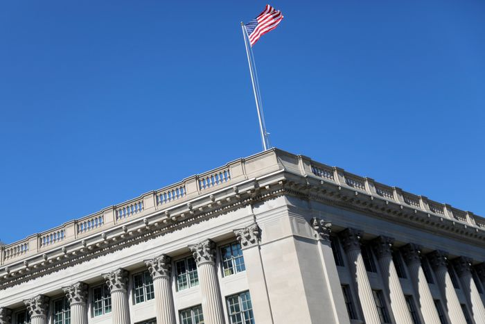 | |
| 2021-11-08 05:30:00 | Business | Pilots Are in Demand Again, as Strained Airlines Go on a Hiring Spree | Carriers press to refill their cockpits after the Covid-19 pullback led to a surge in early retirements; new hires can reap thousands in bonuses | ||
| 2021-11-08 05:30:00 | Derby’s Take: A Hawkish Case for Fed Action on Inflation Emerges | Federal Reserve Chairman Jerome Powell’s clear guidance that the U.S. central bank doesn’t need to raise short-term interest rates soon is facing a nascent challenge by one of the institution’s most reliable hawks. On Friday, Kansas City Fed leader Esther George warned that an outlook for inflation laid out by Mr. Powell on Wednesday may not accurately describe the inflation environment, with potential implications for monetary policy. After... |
|||
| 2021-11-08 05:30:00 | Markets | Rich Millennials to Financial Advisers: Thanks For the Golf Invite, But You Can’t Invest My Money | Wealthy young investors don’t see much use for the wealth-management firms their parents rely on. They would rather pick their own stocks or plow their money into crypto. | Michael Martocci, a 26-year-old startup founder, ignores the golf invitations and other solicitations from the Goldman Sachs Group Inc. financial adviser trying to land him as a client. Eighteen holes isn’t particularly appealing to the Miami-based Mr. Martocci, and neither is paying for financial advice. Instead, he oversees his hundreds of thousands of dollars in investments himself. He funnels 90% of his money into cryptocurrency. To check his stocks, he pulls up Robinhood Markets Inc. on his phone. |
|
| 2021-11-08 05:30:00 | Commodities | New Trust to Offer Institutional Investors Greater Access to Diamond Market | Diamond Standard’s new standardized investment trust eventually would trade over the counter and be a step toward more accessible diamond trading | ||
| 2021-11-08 05:19:00 | Markets | Tesla Share Price Slides After Musk Promises to Sell $21 Billion Stake | Car maker’s chief executive asked Twitter users whether he should sell a 10th of his Tesla stock | Tesla Inc. shares fell in premarket trading after Twitter users directed Chief Executive Elon Musk to sell a 10th of his stock in an online poll. The electric-vehicle maker’s stock lost 5.6% ahead of the bell Monday. “I was prepared to accept either outcome,” Mr. Musk said in a tweet Sunday after participants in the poll backed a sale by 58% to 42%. Neither Mr. Musk nor Tesla has said when a share sale would take place. |
|
| 2021-11-08 04:40:00 | Markets | Stock Futures Pause; Tesla Shares Fall Premarket | Twitter users, responding to Elon Musk’s poll, said the Tesla CEO should sell 10% of his stock | U.S. stock futures wavered, and Tesla shares fell in premarket trading after Chief Executive Elon Musk asked Twitter users if he should sell some of his stock. Futures for the S&P 500 edged up less than 0.1% Monday. The broad market index hit a new record high Friday after Labor Department data showed job growth rebounded in October. Contracts for the tech-focused Nasdaq-100 edged down 0.1% Monday, and futures for the Dow Jones Industrial Average added 0.2%. |
|
| 2021-11-08 03:15:00 | Tech | SoftBank Reports $3.5 Billion Loss, Hit by China’s Tech Crackdown | Beijing’s moves against Alibaba, Didi and others hurt value of Japanese tech investor’s portfolio | TOKYO— SoftBank Group Corp. reported its first quarterly net loss in a year and a half after China’s stricter regulations on technology companies caused a sharp stock selloff and weighed on SoftBank’s investment portfolio. The Japanese conglomerate, best known for its $100 billion Vision Fund and one of the world’s leading funders of Chinese startups, posted a loss of ¥398 billion, equivalent to $3.5 billion, for the quarter ended Sept. 30. |
|
| 2021-11-07 21:00:00 | Deals | Blackstone to Invest Up to $250 Million in Autolus Therapeutics of U.K. | Funds will help develop a leukemia therapy; under deal, the private-equity firm intends to buy a $100 million stake in the biotech company | Blackstone Inc. is investing as much as $250 million in U.K. biotechnology company Autolus Therapeutics PLC to fund the final stages of development of a new therapy to treat a serious form of leukemia, the companies said. Of the total investment, as much as $150 million will support the development and commercialization of obecabtagene autoleucel, a cell therapy that targets a condition called acute lymphoblastic leukemia. London-based Autolus will receive $50 million of that upfront, with the rest to be paid as the company achieves certain milestones. In return, Blackstone’s life-sciences unit will receive a portion of the therapy’s royalties. |
|
| 2021-11-07 19:06:00 | Business | BHP to Sell Controlling Stake in Two Coal Mines for Up to $1.35 Billion | The world’s biggest miner by market value will sell its 80% stake in the BHP Mitsui Coal venture to focus on higher-quality steelmaking coal | ADELAIDE, Australia— BHP Group Ltd. said it would sell its controlling interest in two metallurgical coal mines to Stanmore Resources Ltd. for up to $1.35 billion, shifting focus to high-quality coal that it expects to be in demand as the global steel industry decarbonizes. BHP said Stanmore will buy its 80% stake in BHP Mitsui Coal, or BMC, which operates the South Walker Creek and the Poitrel coal mines in Queensland, a coal-rich Australian state located in the northeastern part of the country. Japan’s Mitsui and Co. owns the remaining stake. The Wall Street Journal recently reported that a deal for BHP to sell the interest to Stanmore was close. |
|
| 2021-11-07 17:33:00 | U.S. | Tragedy at Travis Scott Show in Houston Prompts New Questions for Concert Industry | Security experts ask whether the crowd was properly managed and security staff was sufficiently trained after eight died | The casualties at the Travis Scott show in Houston on Friday night are prompting the concert business to search for what went wrong and raise fresh questions about the adequacy of security at music festivals. At least eight people died and many were injured following an apparent crowd surge during Mr. Scott’s headlining set at the Astroworld Festival, making it one of the deadliest concert disasters in years. Authorities have launched an investigation into the surge, security measures and reports that someone was injecting fans with drugs. It remains unclear how either potential safety lapses or criminal activity might have been connected to the crowd surge. |
|
| 2021-11-07 17:12:00 | Opinion | Republicans Rescue Biden’s Agenda | Will the infrastructure bill grease the wheels for the Democrats’ $4 trillion spending blowout? | The press is full of triumphant accounts of how Speaker Nancy Pelosi and President Biden saved their party, the country, and maybe the future of mankind by passing the $1 trillion infrastructure bill through the House late Friday night. It’s more accurate to say their divided party was rescued by 13 Republicans who voted with the Democrats. With their narrow House majority, Democrats couldn’t pass the bill themselves after six left-wing Members voted no. Without those GOP votes, the bill would have failed and Democrats would have suffered another political defeat and more recriminations. Instead, Democratic leaders are moving ahead fast to focus on their $4 trillion entitlement spending and tax bill that is now more likely to pass. |
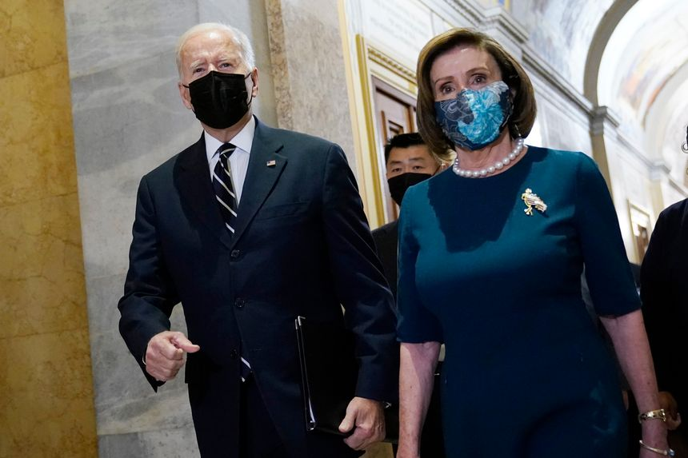 |
| 2021-11-07 17:00:00 | Deals | CQ Roll Call Owner FiscalNote in Talks to List Through $1.3 Billion SPAC Deal | The Washington, D.C.-based firm would merge with Nasdaq-listed Duddell Street Acquisition | FiscalNote Holdings Inc., a Washington, D.C.-based provider of services used to track government policy, is in talks to go public through a merger with a special-purpose acquisition company at a valuation of $1.3 billion, according to people familiar with the matter. The company, owner of Washington political publication CQ Roll Call, plans to merge with Duddell Street Acquisition Corp. , the people said. Nasdaq listed, the SPAC is backed by Hong Kong-based hedge fund Maso Capital. |
|
| 2021-11-07 17:00:00 | Opinion | A Tax Break for Trial Lawyers | The House budget bill would let them write off contingency-fee expenses. | The House Democrats’ 2,100-page budget bill is chock full of goodies for liberal special interests, and one of the worst is a tax break for their dear friends in the plaintiffs bar. While raising taxes on businesses, Democrats want to subsidize more frivolous lawsuits against business. The IRS generally bars lawyers working on contingency-fee cases from deducting expenses such as depositions, expert testimony and discovery until a case resolves. In contingency-fee arrangements, attorneys front the costs of a lawsuit in return for some share—usually 30% to 40%—of the client’s eventual settlement or award. |
|
| 2021-11-07 16:58:00 | Opinion | The Greening of Your Pension | The climateers at Glasgow agree to dip into your savings on the sly to avoid taxing you openly. | This year’s climate summit in Glasgow has been an embarrassing flop for the green brigades, with one baleful exception. World leaders can’t agree on costly binding CO2 emissions targets that they’d have to explain to taxpayers back home. So they’ve decided instead to dip into your pension savings on the sly. That’s the real story of the $130 trillion (yes, with a “t”) in green finance that officials claim to have mobilized last week. The sum comes via the Glasgow Financial Alliance for Net Zero, an outfit run by former Bank of England chief Mark Carney that counts 450 financial firms from 45 countries with $130 trillion in assets under management. The group’s members committed to investing their capital in greener ways—while the world’s leading financial regulators committed to making sure that they do. |
|
| 2021-11-07 16:55:00 | Opinion | Read My Lips, Says Kathy Hochul | Now that the top New York City and state tax rate is 14.8%, she vows not to raise taxes again. | Voters have won at least one small political victory in the wake of last week’s thumping of Democrats. To wit, New York Gov. Kathy Hochul has vowed not to raise taxes. Ms. Hochul swore off near-term tax hikes Thursday in an interview with local magazine City & State. “I’m not interested in driving people out of the state,” she said, noting the loss of New Yorkers to Florida and other low-tax clim said she wants to attract business to refill empty offices, and “raising taxes right now will not accomplish that.” |
|
| 2021-11-07 16:41:00 | Business | Electric-Vehicle Charging Stations Win Jolt of Energy in Congress | Bipartisan infrastructure bill would direct billions to long-distance charging networks and steps to improve electric-transmission lines | The roughly $1 trillion infrastructure package passed by Congress on Friday provides a spark to efforts to build a national network of electric-vehicle charging stations. The bipartisan measure touches on nearly every aspect of the electric-vehicle industry and eclipses previous efforts in the U.S. It also includes funding to help transform the nation’s aging electric grid by upgrading high-voltage transmission lines and other infrastructure set to become even more crucial as the country electrifies more of its transportation system. |
|
| 2021-11-07 15:41:00 | Politics | Biden Gets $1 Trillion Down Payment on Domestic Agenda; Obstacles Loom for Spending Bill | White House faces inflation pressures and uncertain fate of the $2 trillion spending bill | WASHINGTON—President Biden notched a big win with the House passage of the $1 trillion public-works bill late Friday, but political obstacles loom ahead for the White House as attention shifts to an even bigger spending bill and next year’s midterm elections. Congress is set to take a weeklong recess and return on Nov. 15 with a litany of items to complete in short order to avert a government shutdown and move forward on the roughly $2 trillion education, healthcare and climate package that has proven difficult to negotiate with the party’s slim majority in Congress. |
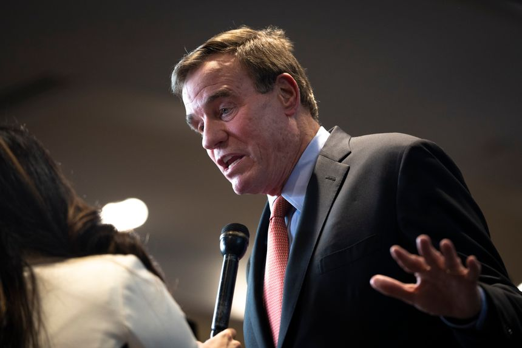 |
| 2021-11-07 15:39:00 | Opinion | Reagan Saw the GOP’s Comebacks Coming | He predicted Democratic failure after the 1976 and 1992 elections. The pattern recurred after 2008 and 2020. | Ronald Reagan wouldn’t have been surprised at last week’s Republican turnabout. He predicted several previous such conservative comebacks, starting with the one he led in 1980. Peter Hannaford (1932-2015), who worked for Reagan for 30 years as a communications and media adviser, was a friend of mine. He would often tell me after a disastrous election for conservatives that Reagan had the wisdom to put it into perspective and the ability to inspire optimism about the future. |
|
| 2021-11-07 15:33:00 | Opinion | Ron Wyden’s Plan to Gut Capital Markets | His ‘billionaire’s tax’ would encourage private investment at the expense of the middle class. | Sen. Ron Wyden’s proposed “billionaires tax” on accumulated capital gains got thrown out of the latest version of the massive spending bill—but not before winning the endorsement of President Biden and Treasury Secretary Janet Yellen. It’s disturbing that they would even consider a plan that would put a stake in the heart of U.S. capital markets, dwarfing whatever benefit it might provide for social programs. American public capital markets have been shrinking for decades. There are half as many public companies today as there were in the late 1990s. The costs of going public and being public are high and being pushed higher by an ever-increasing panoply of disclosure and governance requirements. Although initial public offerings have surged recently, in part because of high valuations and the rise of blank-check companies, Mr. Wyden’s “billionaire” tax would put a quick end to any long-term comeback by imposing, for the first time in U.S. history, a capital gains tax on assets’ unrealized gains. Since the country’s founding any capital gains taxes have applied only when an asset is sold. |
|
| 2021-11-07 15:31:00 | Opinion | A New Iran Deal Could Be an Occasion for Bipartisan Unity | To make it stick, Biden can follow the Constitution and submit it to the Senate for ratification as a treaty. | The effort to bring bipartisan unity back to our government in Washington received an unexpected boost from an unlikely place last month. Iran’s new foreign minister, Hossein Amir-Abdollahian, said that if talks on restarting the nuclear agreement between Iran and the P5+1 begin (as appears likely later this month), Tehran would demand assurances that “Washington will not renege on the deal again.” The only way to assure that is for President Biden to submit an agreement with Iran to the Senate as a treaty, needing 67 votes to be ratified. That would require support from members of both political parties. It would bring Washington, for a moment, back to bipartisanship in foreign policy. |
|
| 2021-11-07 15:29:00 | Books & Arts | ‘Rescuing Socrates’ Review: Great Books, Greatly Missed | A remembrance of things past—reading major thinkers, asking serious questions, learning from devoted teachers. | In 1985, when Roosevelt Montás first arrived in New York, he was an 11-year-old Dominican “with a head full of lice and a belly full of tropical parasites.” By his own account, he didn’t seem destined for a brilliant future and was “an unlikely candidate for the Ivy League.” Almost 40 years later, it’s clear that this wide-eyed immigrant has ended up blessing one particular Ivy League school as abundantly as it has blessed him. The cover of “Rescuing Socrates” shows a marble statue of the philosopher improbably stuck in a plastic life preserver, a pop-art image that does little justice to this remarkable book. A better image would have been a photograph or drawing of a teenage boy on a busy street in Queens, N.Y., taking a volume of Plato from a stack of books thrown in the trash—because that is how young Mr. Montás first discovered the bedrock thinker of the Western philosophical tradition. |
|
| 2021-11-07 15:12:00 | Tech | Elon Musk’s Twitter Poll Results Favor Tesla Stock Sale | Billionaire CEO pledged to abide by vote’s outcome after asking whether he should sell 10% of his Tesla shares | Twitter users said Elon Musk should sell 10% of his Tesla Inc. stock after the billionaire chief executive polled them and pledged to abide by the outcome of the vote. Voters backed the share sale by a wide margin, with roughly 58% in favor of a sale and 42% opposed, according to the polling data posted on Twitter. More than 3.5 million votes were cast. |
|
| 2021-11-07 15:08:00 | World | Nicaraguan President Ortega Expected to Win Re-Election as Country Veers Into Dictatorship | Ortega’s triumph would deepen country’s isolation and risk increasing a migrant exodus to the U.S., which has described the election as a sham | Nicaraguans cast ballots Sunday in an election whose result the opposition says is preordained: President Daniel Ortega is expected to win an overwhelming majority, completing his transformation into a 21st century version of the dynastic dictator he helped overthrow as a guerrilla revolutionary more than 40 years ago. Mr. Ortega, 75, who is running with his wife, Vice President Rosario Murillo, is expected to win a fourth consecutive term after he imprisoned seven would-be presidential candidates and 32 other leading businessmen, journalists, political foes, student and peasant leaders. The U.S. and European Union have described the elections as a sham. |
|
| 2021-11-07 15:00:00 | Economy | Economy Week Ahead: Inflation, Employment, GDP | Economists expect U.S. consumer prices and Chinese producer prices, both running hot, to show further heating for October | Inflation data from the U.S. and China highlight this week’s slate of economic news. Federal Reserve Chairman Jerome Powell and Fed Vice Chairman Richard Clarida kick off a full week of remarks from central-bank officials as they wind down aggressive, pandemic-driven stimulus amid rising concerns about inflation. Mr. Clarida’s remarks, on inflation and prospects for monetary policy, could draw special attention. |
|
| 2021-11-07 14:06:00 | World | Rebels Advance Toward Capital As Ethiopia Moves Deeper Into War | One-year-old conflict has been marked by allegations of ethnically motivated atrocities, man-made starvation | Ethiopian rebel forces advanced toward the country’s capital, threatening to widen a civil war raging in Africa’s second-most populous nation marked by allegations of ethnically motivated atrocities and man-made famine. Fighters from the Tigray People’s Liberation Front and allied militias in recent days have captured two strategic towns about 230 miles from Addis Ababa, expanding a conflict that for the past year had largely been confined to Ethiopia’s north. |
|
| 2021-11-07 13:44:00 | Business | Disney’s ‘Eternals’ Battles Tepid Reviews to No. 1 Opening | The Marvel Studios superhero epic is the fourth-highest debut of the pandemic; the movie starring Angelina Jolie received some of the harshest reviews of the franchise | Walt Disney Co. ’s Marvel superheroes again rescued the nation’s struggling theater chains at the box office over the weekend, with the studio’s “The Eternals” opening to a healthy $71 million in the U.S. and Canada. While a much-needed jolt of revenue for exhibitors, the opening failed to meet the sky-high expectations set by the comic-book epics, perhaps a result of the film’s poor critical reviews and tepid audience response. The movie collected an additional $90.7 million from international ticket sales, according to preliminary studio estimates. |
|
| 2021-11-07 13:23:00 | Opinion | Stuck Between Zoom School and High Tuition in Michigan | My children need school choice. | As the editorial board notes in “School Choice Showdown in Michigan” (Nov. 2), five families are part of a lawsuit challenging a provision in Michigan’s constitution that prohibits state aid to parents who enroll their children in private K-12 schools. One of those families is mine. Unfortunately, our twin boys were part of the 60% of Michigan public-school students who started last school year with remote or hybrid instruction. They spent their first day of kindergarten in front of a computer and remained there for most of the year. My sons went from happy little guys who liked school and learning to being sad and frustrated. Every morning I had to watch my two boys cry because they didn’t want to do school on computers anymore. |
|
| 2021-11-07 13:22:00 | Opinion | Biden’s Overhyped European Trade Deal | Limiting Chinese steel imports will do little for Americans. | In “The U.S. and EU Shake Up Global Trade” (Global View, Nov. 2), Walter Russell Mead overcelebrates the U.S.-EU steel agreement concluded at the Group of 20 summit in Rome. He says that for U.S. labor the deal “can be packaged as ‘foreign policy for the middle class,’ limiting low-wage competition from China.” He cites President Biden, who flagged in Rome that the agreement will limit access to U.S. markets for “dirty steel from countries like China.” Both the president and Mr. Mead would have been well served by looking at the hard facts of trade before going overboard with sweeping statements about market and climate impacts of Chinese steel imports. There is actually little room to constrain Chinese steel exports to America: China does not even make the top-10 list of foreign steel suppliers to the U.S. Last year, by volume, China accounted for less than 2% of our global steel imports. Blind anti-China policy reflexes can unwittingly result in much ado about (almost) nothing. |
|
| 2021-11-07 13:19:00 | Opinion | Artificial Intelligence Is Still No Match for Us | Scientists misunderstand human reason and an AI system fails the Turing test. | Eric Schmidt was executive chairman while I was in the trenches at Google in 2012, but I know better than to claim—as he does with Henry Kissinger and Daniel Huttenlocher—that GPT-3 is “producing original text that meets Alan Turing’s standard.” The GPT-3 program hasn’t passed the Turing test, and it seems nowhere near doing so (“The Challenge of Being Human in the Age of AI,” op-ed, Nov. 2). Compared with earlier text-generation systems, the output generated by GPT-3 looks impressive at a local level; individual phrases, sentences and paragraphs usually demonstrate good grammar and look like normal human-generated text. But at a global level—considering the meaning of multiple sentences, paragraphs or a back-and-forth dialogue—it becomes apparent that GPT-3 doesn’t understand what it’s talking about. It doesn’t have common-sense reasoning or the ability to keep track of objects over time in a discussion. One example, published in August 2020 in MIT Technology Review: GPT-3 was asked, “Yesterday I dropped my clothes off at the dry cleaner’s and I have yet to pick them up. Where are my clothes?” Its response: “I have a lot of clothes.” |
|
| 2021-11-07 13:15:00 | Opinion | Virginia’s Dirty Trick, Dark Money and Sen. Whitehouse | The senator should investigate his friends’ dark financial ties to race-baiting election interference. | Your editorial identifies Lauren Windsor as a co-conspirator in the Lincoln Project’s attempt to fan the flames of racism and deceive voters in Virginia’s gubernatorial contest (“A Dirty Campaign Trick in Virginia,” Nov. 1). Ms. Windsor is executive director of American Family Voices, a “dark money” nonprofit that has for years received much of its revenue from the Center for Media and Democracy (CMD), Internal Revenue Service filings reveal. Yet Sen. Sheldon Whitehouse (D., R.I.), America’s leading denouncer of “dark money,” has repeatedly cited CMD’s attacks on his enemies and invited its leader to testify before him. Perhaps the senator should investigate his friends’ dark financial ties to this ugly, race-baiting interference in an election. |
|
| 2021-11-07 13:01:00 | Opinion | A Long Time Since ‘Zeppelin IV’ | Even now, half a century later, there’s still time to change the road you’re on. | “It’s been a long time since” . . . 1971. Fifty years ago on Nov. 8, the album “Led Zeppelin IV” was released, which included the eight-minute classic “Stairway to Heaven.” It was a year of transition from turmoil to modernity, a songwriter’s paradise. And yes, I’m a sucker for anniversaries. Back in 1971 we listened to music on LP records—for the uninitiated, 20 or so minutes of music pressed into vinyl, spun at 33 1/3 rpm and amplified from a scratchy needle to giant speakers. Without TikTok, my generation wasted time poring over album-cover art in search of hidden meaning and reading the liner notes printed on the album sleeves. |